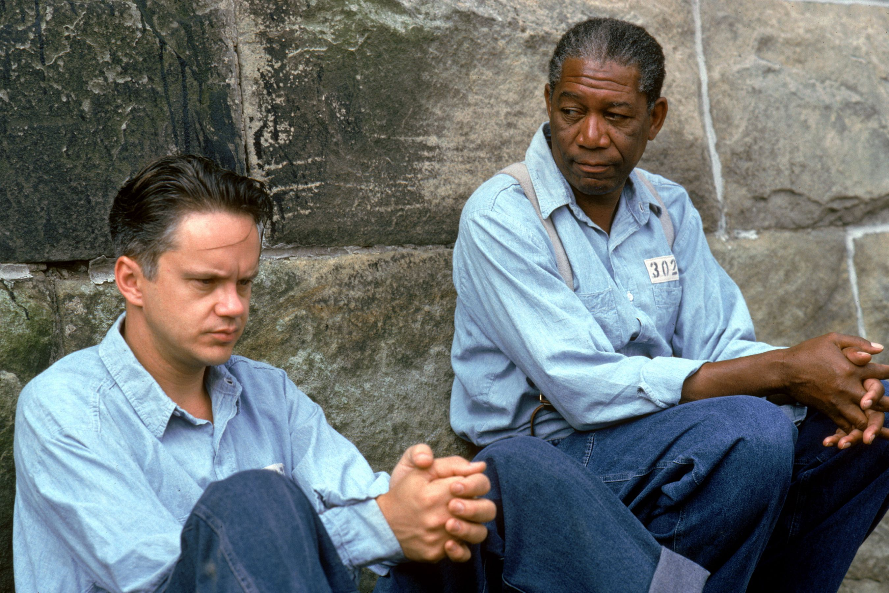
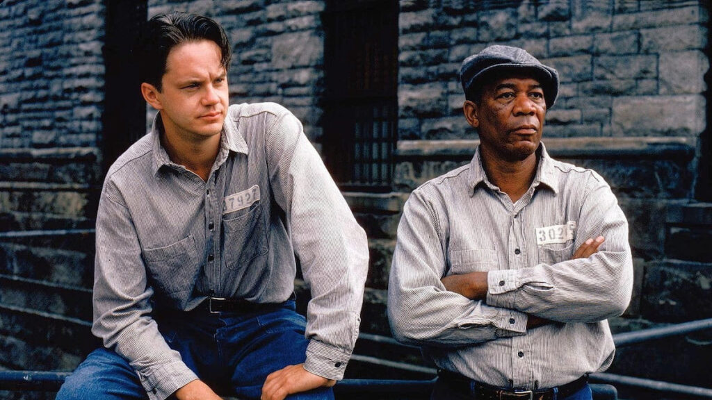

The Shawshank Redemption is een Amerikaanse speelfilm uit 1994 geregisseerd door Frank Darabont naar het korte verhaal Rita Hayworth And Shawshank Redemption van Stephen King. De hoofdrolspelers zijn Tim Robbins (Andy Dufresne) en Morgan Freeman (Ellis Boyd "Red" Redding)..
 